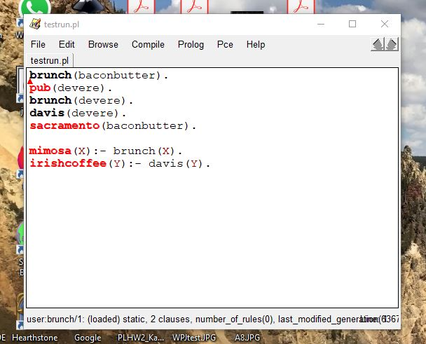

Computer Theory and Languages
Definitions
- Syntax: aspects of a programming language which can be modeled by a context-free grammar.
- Semantics: consists of the study of the relationships between symbols or signs such words, phrases, sentences, and discourses, and what these elements mean or stand in for.
- Lexical scanning: break character stream into tokens. Lexical analyzers are usually automatically generated from patterns (regular expressions).
- Parsing/Parser: impose structure on token stream, limited to syntactic structure (high level). Parsers are usually automatically generated from context-free grammars.
Prolog Example
- Facts:
- brunch (baconbutter). Bacon & Butter is a brunch place.
- pub (devere). De Vere is an Irish pub.
- brunch (devere). De Vere is a brunch place.
- davis (devere). De Vere is in Davis.
- sacramento (baconbutter). Bacon & Butter is in Sacramento.
- Rules:
- mimosa (X): - brunch (X). Every brunch place has mimosa on their menu.
- irishcoffee (X): - davis (X). Every place in Davis has Irish coffee on their menu.
- Goals:
- ?- mimosa (X), davis (X). Which place has mimosa and is in Davis?
- ?- irishcoffee (X), sacramento (X). Which place has Irish coffee and is in Sacramento.
- Query Run:
 
- Deduction Tree:

Recursive Descent Parser
BNF Grammar:
EXP ::= EXP+TERM | EXP-TERM | TERM
TERM ::= TERMFACTOR | TERM/FACTOR | FACTOR
FACTOR ::- (EXP) | DIGIT
DIGIT ::= 0 | 1 | 2 | 3
Valid Strings:
1+2+3+0$
3+23/2$
(0+2)(((0+3)-2)/2)$
(((1+3)2)-3)$
Invalid Strings:
((12)/3$
2$
(1+a)$
1+1
Enter string using the numbers 0 to 3, the symbols +, -, *, /, (,), and end with $.
For Recursive Descent Parser, I use Javascript. I thought doing it in Javascript might be easier than PHP as I am familiar with Java. It takes a while to get familiar with Javascript actually. There are still differences between Java and Javascript. But for sure, having prior knowledge of Java helps with Javascript. I use w3schools to look up syntax for both Javascript and HTML for this website. After completing this assignment, I am still not sufficient with Javascript and HTML. Yet, in my opinion, Javascript and HTML both are well-known languages that are easy to learn and very useful to have on resume.